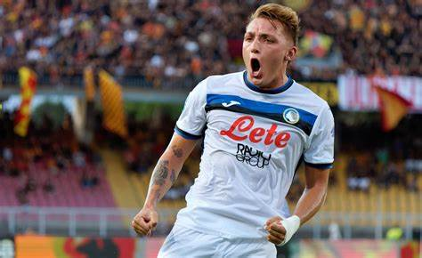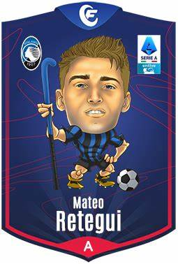
Informazioni:
Nazionalità;Italiana
Età :26anni
Altezza:1,86
Piede preferito:destro
Statistiche:
Presenze:36
Gol:25
Assist:8
Cartellini Gialli:2
Cartellini rossi:0
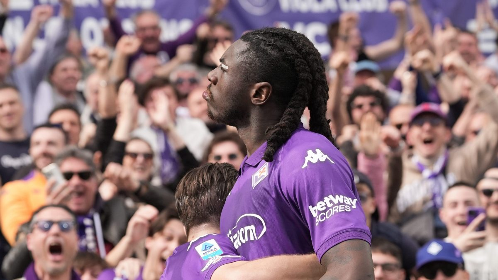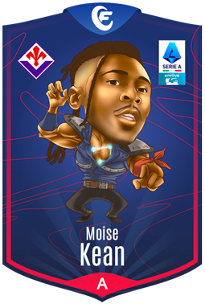
Informazioni:
Nazionalità:Italiana
Età:25anni
Altezza:1,83
Piede preferito:destro
Statistiche:
Presenze:32
Gol:19
Assist:3
Cartellini Gialli:6
Cartellini rossi:0
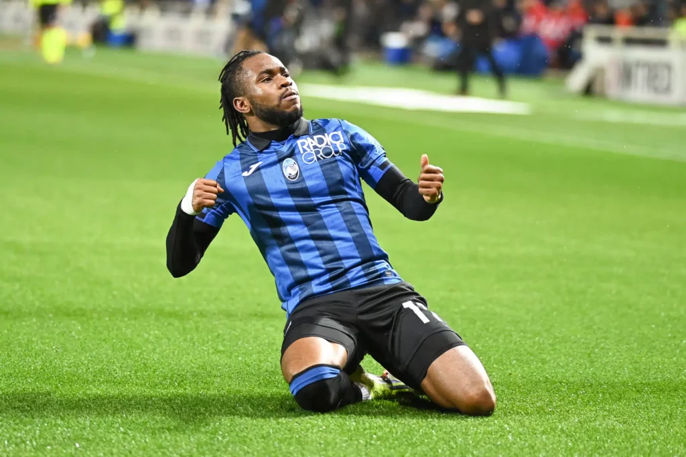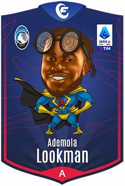
Informazioni:
Nazionalità:inglese-nigeriano
Età:27anni
Altezza:1,74
Piede preferito:destro
Statistiche:
Presenze:31
Gol:15
Assist:5
Cartellini Gialli:4
Cartellini Rossi:0
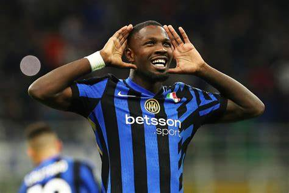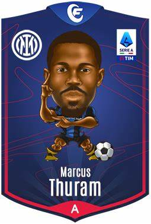
Informazioni:
Nazionalità:Francese
Età:27anni
Altezza:1,92
Piede preferito:destro
Statistiche:
Presenze: 32
Gol:14
Assist: 4
Cartellini Gialli:1
Cartellini Rossi:0
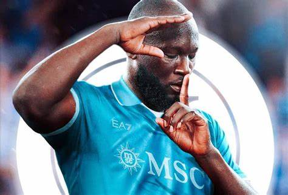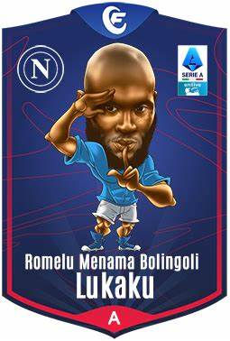
Informazioni:
Nazionalità:Belga
Età:31anni
Altezza:1,91
Piede preferito:sinistro
Statistiche:
Presenze:36
Gol:14
Assist:10
Cartellini Gialli:4
Cartellini Rossi:0
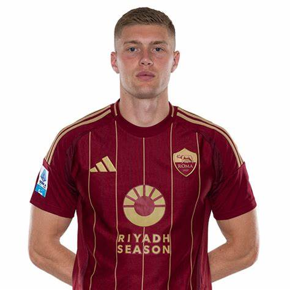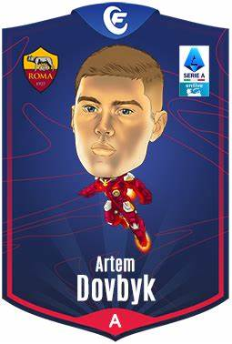
Informazioni:
Nazionalità:ucraina
Età:27anni
Altezza:1,89
Piede preferito:sinistro
Statistiche:
Presenze:32
Gol:12
Assist:2
Cartellini Gialli:0
Cartellini rossi:0